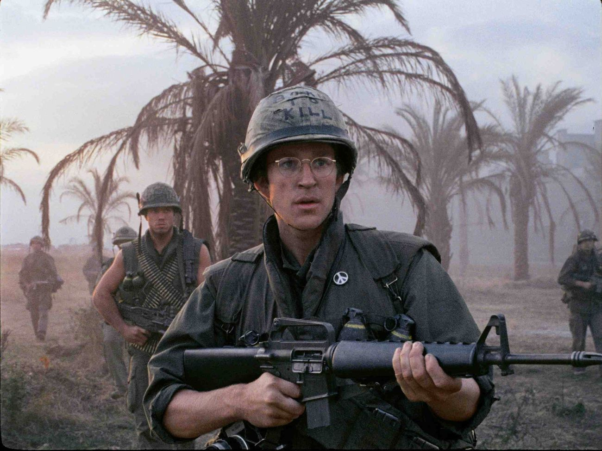

Full Metal Jacket is a war movie not just about war but about becoming a cog in the machine. The movie introduces several characters as they go through a boot-camp and then primarily follows Joker as they are deployed in Vietnam. The focus of this film isn't crazy action shots but instead the impacts and effects of war. You see soldiers lose their identity as individuals and grapple with the horrors of becoming a killer machine and losing their humanity for the sake of being US soldiers in a war that was very unpopular and the motives weren't clear.
The great thing about this movie is that the theme of "becoming a cog in the machine" can be applied outside of war. As we grow up, we all experience a time where we're assimilating to a workplace, taking on responsibility with our families, or taking on a role in society. In these parts of life we also become a cog of a bigger piece. We lose our individuality in a way, we sacrifice some of our needs, and we grapple with emotions that we can no longer prioritize because we have to serve a higher purpose of a family, a job, etc. This feels like a universal theme but in the setting of war.